First off, let me say that is is a big job for those of us who are unfamiliar with the insides of an engine. Speaking to mechanics about the insides of engines, the mere act of ‘splitting the cases’ somehow attains the status only given to great feats of bravery and achievement. Putting everything back together again is similarly raised to a great level. (OK, maybe you didn’t speak to the same mechanics as I did, but that’s the impression I was given…)
Now that we have decided that our drive chains are worn beyond all hopes of tensioning, and the tensioners themselves have lost all ability to keep the chains from flapping wildly against the insides of the crankcase, we must do one of three things – sell the bike, pay a mechanic vast sums of money to do the work for us, or do it ourselves.
This document is aimed at the latter option – we want to do it ourselves.
Now, you’re probably asking why we can’t simply get into the alternator area by pulling the sump off and working in that way. Well, you can’t. There is no way you can get into the engine through the sump.
OK, why can’t we replace the camchain by simply cutting the old one, and using it to pull the new one through? No reason at all, apart from the simple fact that the cam chain from Honda is endless – there is nowhere to break it.
My plan of attack was simple – pull the engine out, turn it upside down & split the cases, then remove the crankshaft enough to get the old chains out, and the new ones in. Like all plans that seem too simple to be true, there were a few catches with this one…
Before we start
You’ll need something to lift the engine out of the frame – it’s one heavy lump of metal. The service manual says it weighs 80kg with no oil in it. I’d certainly believe it. Having a strong, mechanically capable friend helps a lot here.
Things you will really need:
- A torque wrench with a useable range from 5 ft-lb up to 70 ft-lb
- Sockets (10mm and 12mm are the main ones) that can reach into small places * * Either new gaskets, or some sort of liquid gasket sealant
- Lots of rags for mopping up spilt oil
- New parts from Honda to put into your engine
- A fair bit of time
Parts and part numbers
| Part Description | Part Number | Quantity |
| Chain, Cam | 14401-MJ0-023 | 1 |
| Brkt, Comp, Tension (Cam chain tensioner) | 14500-MJ0-010 | 1 |
| Slipper, Chain Ten (Cam chain tensioner slipper) | 14510-MJ0-000 | 1 |
| Tensioner, Assy, AC (Alternator chain tensioner) | 28170-MW3-J00 | 1 |
| Chain, ACG Drive (Alternator chain) | 28161-MJ0-005 | 1 |
| Guide, ACG Chain (Alternator chain guide – optional) | 28191-MJ0-000 | 1 |
| Gasket, Oil Pan (Sump Gasket) | 11398-MW3-600 | 1 |
| Gasket, R Cover (RHS crankshaft cover gasket) | 11396-MW3-600 | 1 |
| Gasket, L Crank Cover (LHS crankshaft cover gasket) | 11397-MW3-600 | 1 |
| Gasket, Clutch Cover | 11395-MW3-600 | 1 |
| Gasket, L Inner Cover (Countershaft bearing cover gasket) | 11663-MW3-600 | 1 |
Step 1 – Removing the Engine
I guess you could say that this step is very easy – put the bike up on it’s centre stand, and remove anything that is connecting the frame to the engine.
You will have to drain the oil from the engine, so I suggest that you ride the bike for a little while (to get the oil hot), then drain the oil as soon as you get back to your workshop. Don’t forget the two drain plugs in the frame tubes, otherwise you’ll have about half a litre of oil pour onto the floor when you remove the oil lines.
We removed the seat, fairing, tank, fairing side covers, carbs, exhaust system, gear lever, the two armoured oil lines that connect from the engine to the frame tubes, clutch slave cylinder, ground strap, coils and spark plug leads, oil filter, and finally, loosened the engine mount bolts.
We should have removed the clutch, as it is difficult to remove once the engine has been removed from the frame.
At this point, we got the jack from the car, and started to carefully lift the engine. When you see the frame start to lift, then you have the weight of the engine supported by the jack. We put a large piece of wood between the jack and the sump to prevent damage to the sump.
Remove the 4 engine mount bolts (1 at the front, one at each side at the bottom, and one are the rear) whilst leaving the engine on the jack. Remove the two engine mounts from the RHS of the frame (one at the front, one at the rear) along with the two triangular engine mounts at the front. Lift the engine a bit higher with the jack – do a final check that there is nothing left connecting the engine to the frame.
Now you are able to lift the engine up and out of the frame. It helps if you have something to place the engine on (as you can tell from the photos, we had some plastic crates).
Of course, because we hadn’t removed the clutch whilst the engine was in the frame, we had to spend some time taking the clutch to pieces.
In all, it took us between 2 and 3 hours to remove the engine and get it ready to be taken to pieces.
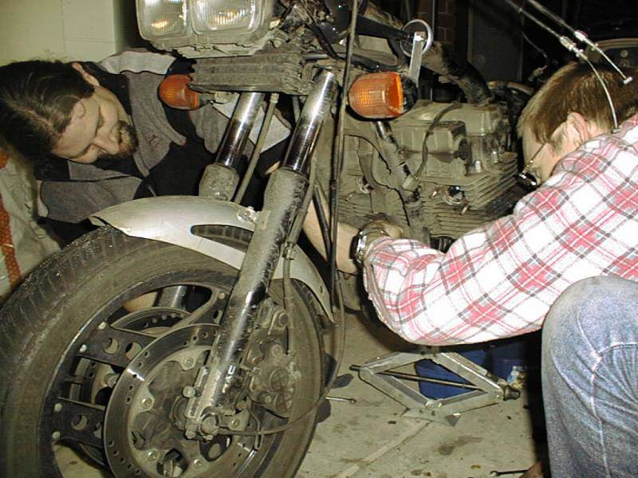
‘Sharkey’ and Viking remove the last engine mount bolt…
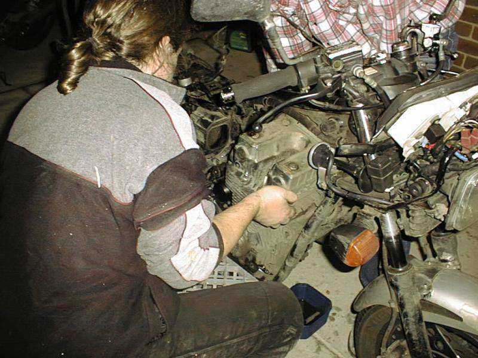
With a lift and a heave, out comes the engine
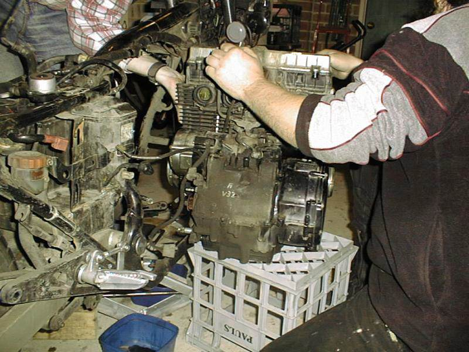
The engine is now balanced on it’s temporary work bench
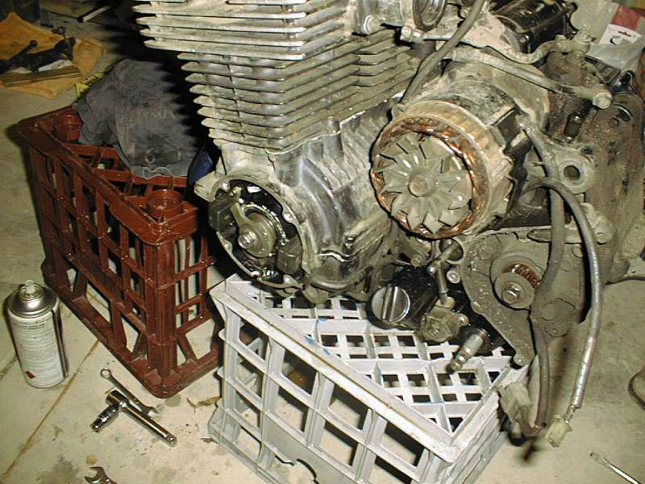
A better view of the engine, complete with dirt. The ‘Countershaft bearing cover’ has the sprocket shaft protruding through it.
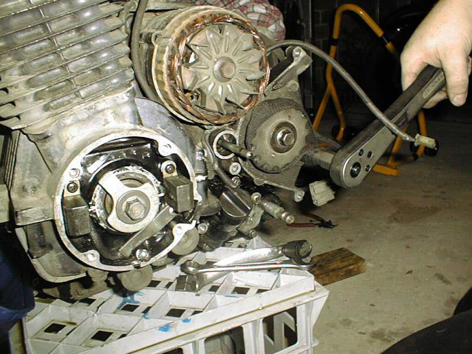
How to hold the engine when you want to remove the clutch nut
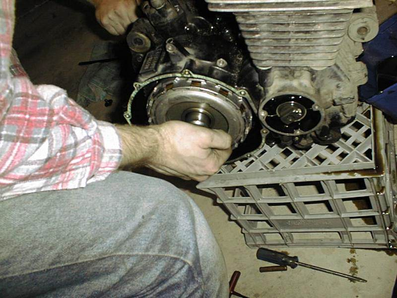
Take a 27mm socket, a breaker bar, and some brute force…
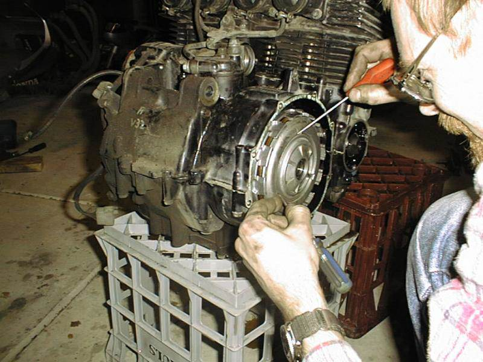
And now, we pull out the guts of the clutch, piece by piece
Step 2 – Splitting the cases
Once you have removed the engine from the frame, you have to remove anything that is holding the two crankcase halves together. These include the clutch, countershaft bearing cover, the two crankshaft end covers, and the oil line that runs from the bottom-front of the engine to the air-oil separator at the top-rear of the engine.
Because I was also replacing the cam chain, I had to get the cam chain off the camshafts at the top of the engine. It’s a fairly straight forward operation to remove the rocker cover, unbolt the four camshaft holder assemblies, remove the cam shaft sprockets from the camshafts, and then drop the cam chain down inside the engine. It was a strange feeling to drop the chain, as every other time I’ve worked on the top of the engine, I’ve been extra careful to avoid dropping the chain.
To stop all the valve gear falling off, I put the camshafts back in place, loosely secured by the camshaft holders and four bolts. They don’t have to be done up tightly, just enough to hold the camshaft in place (and hence, the rocker arms). Put the rocker cover back on the engine, as you’ll be resting the engine on it’s top further down the track.
Before laying the engine over, remove the four crankcase bolts from the top of the engine. Three are in a line from front to rear, with the first under the start motor, whilst the fourth is hiding down that hole to the rear of the alternator.
I then removed the covers to the gearshift mechanism, and the countershaft bearing cover. By laying the engine down on it’s right-hand side, access to these two covers is made much easier.
If your engine is like mine, and hasn’t been cleaned properly in years, there will be a large buildup of crud where the front sprocket is – all that chain lube thats’s been flung off. I had to spend several minutes scraping gunk out simply to find all the bolts. Once you’ve found them all, the cover should come off easily. There are two oil seals around the counter shaft – be careful.
You will also need to remove the sump pan, as there are two crankcase bolts hidden inside the engine. As always, loosen the bolts in a criss-cross pattern in at least two steps to avoid warping anything. Having to get a new sump pan (or even worse, a new crankcase) would be seriously annoying!
You’ll also need to remove the oil pump, as it is bolted to the top half of the crankcase. Use something like a piece of copper pipe to gently wedge the oil pump drive gear and remove the bolt holding the drive gear to the oil pump. Remove the three bolts holding the oil pump in place and manouver the oil pump out of the engine. Be careful of the ‘O’ ring in one of the oil-ways. Don’t forget to remove the oil pressure switch from the side of the crankcase.
Now you can start to remove the 26 bolts that hold the two crankcase halves together. Once again, use a criss-cross pattern (or the reverse of the tightening sequence) in two steps to loosen and remove them all. The photo on page 10-4 of the service manual misses bolt number 4. Luckily, it’s pretty obvious which is bolt 4.
Once all the bolts are out, you can separate the crankcase halves. A couple of gentle taps with a soft-face hammer should allow you to lift the bottom half of the case away. If the halves will not separate, STOP, and look for a bolt you may have missed.
As I gazed down at the cluster of gears neatly nestled together, seeing the crankshaft bearings, all I could feel was a sense of awe and wonder. But then reality hit me again – it was cold, I was holding a piece of cold, oily metal, and I had a lot of work to do.
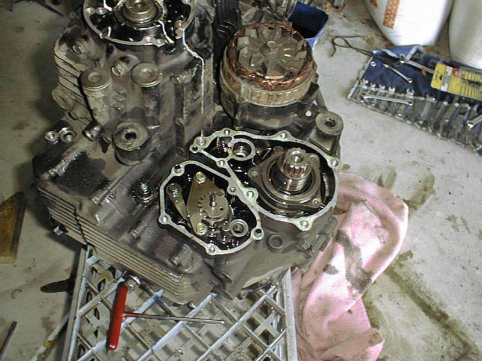
Shift mechanism and countershaft bearing covers removed
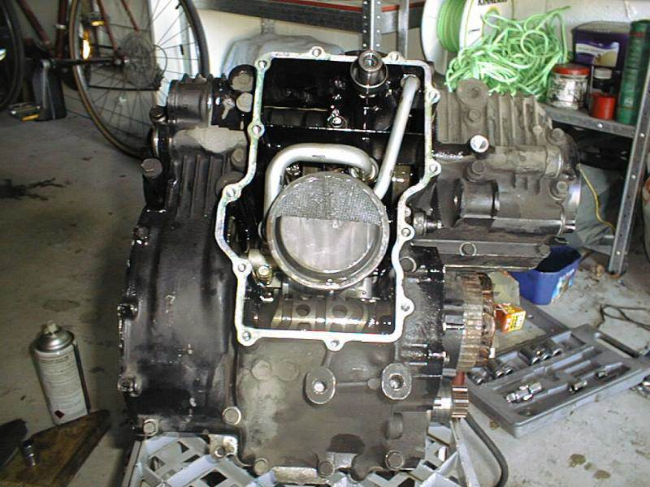
Sump pan removed, oil lines and crankcase bolts still in place
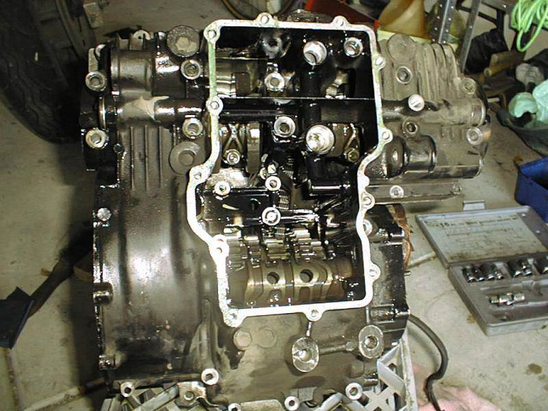
Oil lines removed, all crankcase bolts removed, ready to split the cases
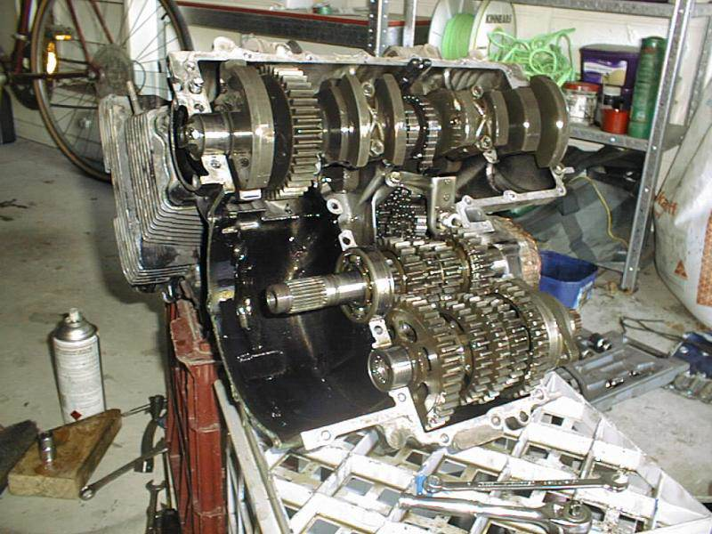
The cases have been separated – what a fantastic sight
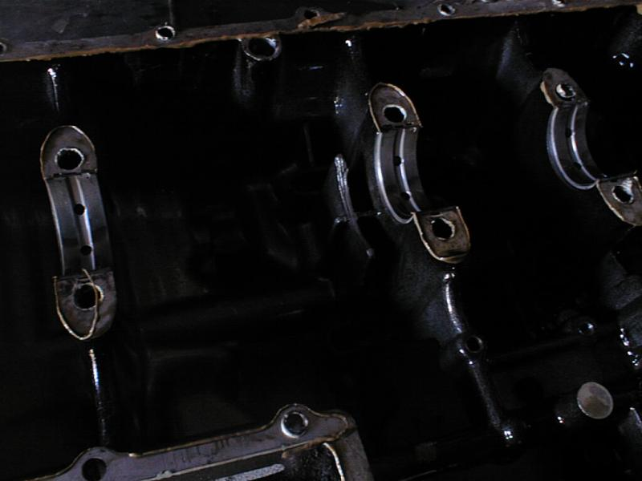
The cam chain had been so loose, it was flying off the bottom of the crankshaft, and hitting that standing up ‘fin’ thing. That is not good.
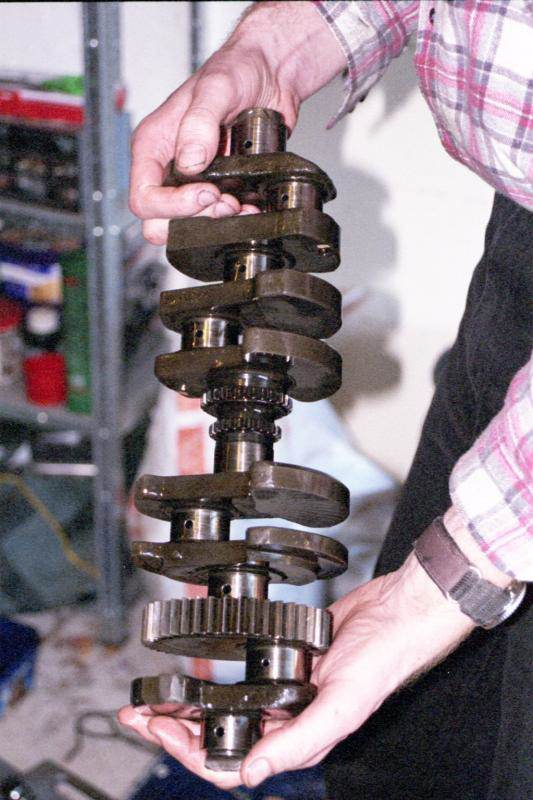
This, ladies and gentlemen, is a crankshaft. I didn’t weight the thing, but it’s pretty heavy!
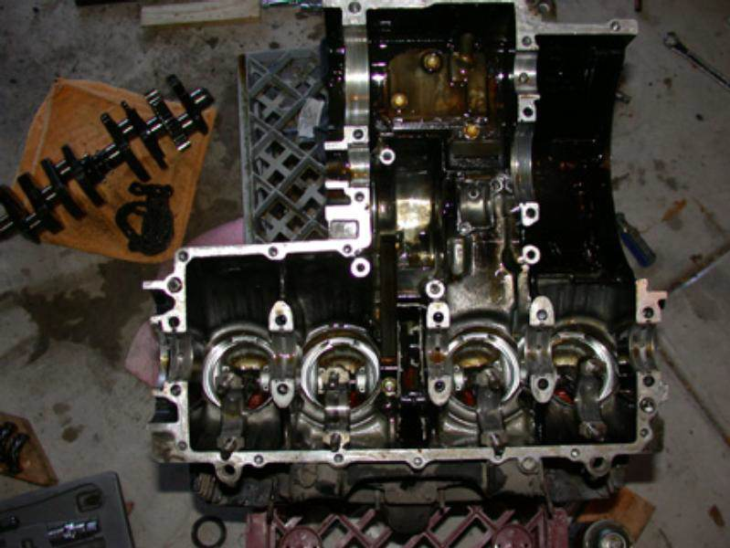
This picture is a bit blurred, as I had to scale it up from a smaller image. But you can see all four pistons exposed, the crankshaft lying on the ground (with the old chains coiled up next to it), and if you look carefully, the bearing shells in the crankcase.
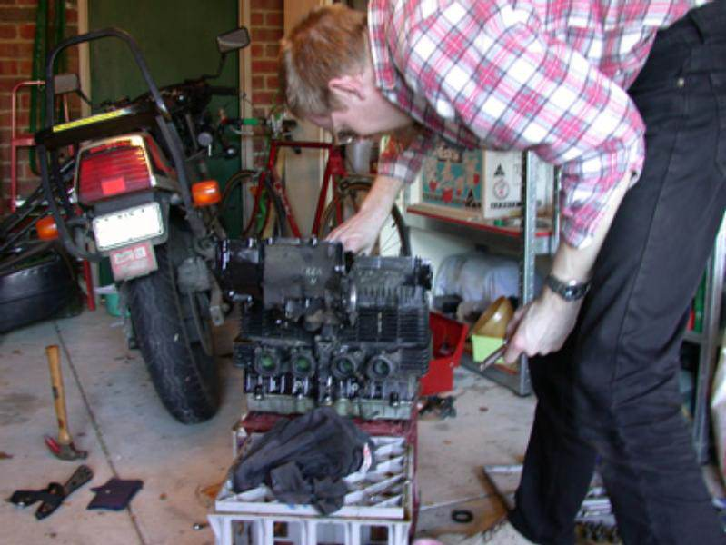
Rod took this picture when I wasn’t expecting it… Yes, it’s me with my hand inside the guts of the engine.
Step 3 – Replacing the chains
Firstly, let me apologise for not providing many photos in this section – I was too busy replacing faulty items to pick up the camera. Although I do think that Ted or Rod took some pictures.
With the cases opened, it was a pretty easy step to remove the old alternator chain by removing the nut on the inside end of the alternator shaft, then pulling the whole assembly out of the engine – just remember which way the bits go when you put it back together again.
The tensioner is held on with three bolts remove them, and put the old tensioner to one side. I elected to replace the other chain slipper, as I had no idea how worn it was – this slipper is bolted into the top half of the crankcase with a very cunning set of bolts. Outside the crankcase, there is a small bolt sticking out, about where the alternator slipper is located. Remove this bolt, then pull the slipper mounting bolt out. I spent several minutes trying to unscrew this pin (it has a slot for a screwdriver in it) with no success. Installing the new slipper is merely the reverse of the removal process.
As the new chains I had bought were endless, I had to remove the crankshaft to replace them. It’s a trivial matter to unbolt the 8 nuts that hold on the bottom of the connecting rods, pull the caps off, and carefully remove the crankshaft. Whilst it’s out, you might as well check all the bearings – it can be very expensive to fix the engine if the bearings are shot.
When you loop the chains over the crankshaft, the camshaft chain is the inner one, and the alternator chain is the outer one. If in doubt, just look at where the chains are before you remove the crank, or place the crank near it’s housing and see which sprocket lines up with which other sprocket. It’s pretty easy, really.
Whilst the crank is out, replace the oil seal that goes on the end of it as a matter of course. I like to replace all the oil seals as I rebuild things – then I don’t have to worry too much about oil leaks when it’s all back together again.
Before you put the crankshaft back in it’s bearings, put a smear of moly grease (molybdenum-sulfide grease – the black, sticky stuff) on the bearing shells. Just don’t get any in the oil-ways.
Once the cankshaft is back in it’s home, reconnect the connecting rods. Tighten the nuts to between 22 and 25 ft-lb of torque. Make sure that you put the same cap on the connecting rod that it came from, and in the same orientation!
Now we have to put the alternator back into the bike. If you can, put a new O-ring on, otherwise clean it carefully and re-use the old O-ring with a small film of liquid sealant. Feed the alternator into the engine, hooking up the alternator chain and sprocket, the starter clutch, the conical washer, before pushing the end of the shaft through the bearing. Once you’ve got it all together (and it’s harder than it sounds), put the thrust washer onto the shaft, then the nut. Torque the nut up to between 22 and 27 ft-lb of torque.
Put the new alternator chain tensioner into place, put threadlock onto the three bolts and tighten. Now you can remove that little wire clip from the alternator tensioner that’s stopping it from expanding – you should hear a little ‘snick’ sound as the tensioner takes up the slack in the chain.
It is possible to reset the tensioner by carefully fiddling with the ratchet mechanism. I’ve managed to reset the old one, but I’d bought a new one, just in case the old one was falling apart.
The cam chain? You can simply drop it down it’s tunnel towards the cylinder head. We’ll grab it later.
Step 4 – Putting the cases back together
Before we put anything back together, we have to clean all the old gasket sealant from the crankcase halves. Yes, this is a painful job, but it’s necessary. I found that a block of wood is very good for running over the edges of the crankcase to get the rubber / silicon sealant off. Old gasket material was scraped off with either a knife or screwdrivers. Oh, you’ll need to do this for the crankcase halves, the sump pan, clutch cover, crankshaft end covers, and anywhere else there’s sealant or gasket material.
Once you’ve got all the old sealant and gasket material off everything, we can start to put everything back together.
Check all the bearing surfaces for wear (you’ve done this already, haven’t you?) and put a smear of moly grease on them – this will protect the bearings and crankshaft until the oil pump starts pumping oil around the engine again.
If you’ve removed the transmission, then put the primary drive shaft back into it’s mounting, making certain to align the bearing groove with the locating set ring. Then put the countershaft into it’s home. You may need to wiggle it about to get the gears to mesh properly. On the bearing away from the sprocket mount point, there are two index marks – line these up with the crankcase. As a final check – the dowel pin set into the crankcase should slip neatly into the index hole in the bearing’s outer surface.
Give the crankcase surfaces a last wipe with a clean rag to get rid of any oil or dirt that has landed on it, then apply a thin coat of liquid sealant. Be careful not to get any sealant on the bearing srufaces, or to block any of the oilways. Use the location of the old sealant as a guide.
Make certain that the gear selector forks are not caught anywhere, and are dangling freely. You might have to slide the gears around to get the forks to fit properly.
The crankcase halves won’t go together if you try to put them together ‘flat’ – you have to put the front edge down first, and lay it down onto the rear edge. Make certain that the gear selectors are in their proper places. If the cases won’t go back together easily, STOP, and see why they aren’t fitting. Using brute force will not work here – you have to be gentle.
The service manual talks of two special aligning pins that help you to line up the crankcase halves. If you are careful, you don’t need them – just make certain that everything is lined up properly.
Now you can begin the long job of tightening all the crankcase bolts. There are 26 of them, and they should be tightened in 2 or 3 steps up to the correct torque values. Be careful – it is very easy to over-tighten them.
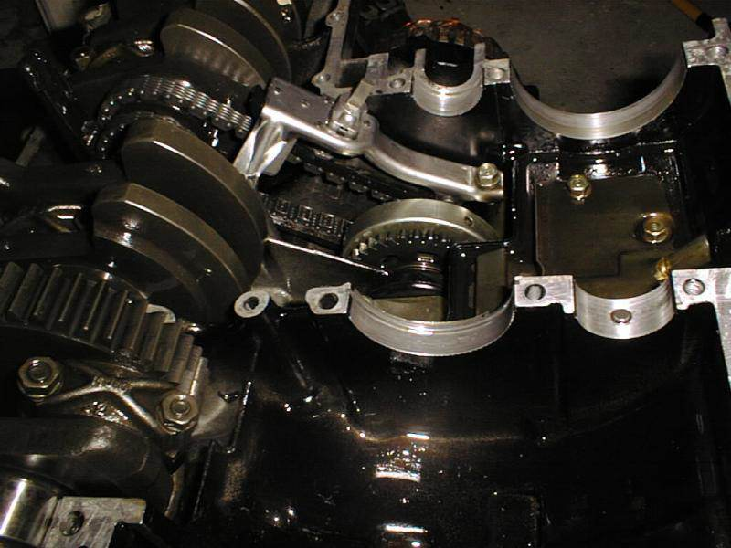
The new alternator chain tensioner is in place – you can see the locating ring for the mainshaft bearing and the dowel pin for the countershaft bearing. The big gear at the front-left is the primary drive (from the crankshaft to the clutch).
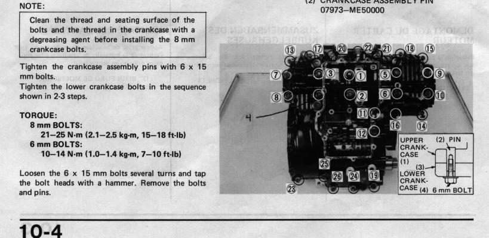
A scan from the service manual, detailing the torque settings and tightening sequence for the crankcase bolts. The 6×15mm bolts mentioned are part of a special tool to help align the crankcase halves properly.
Step 5 – Assembling the top-end
Now that you have the crankcase neatly assembled, it’s time to put the top end of the engine back together. Hopefully, the engine is still upside down, and the cam chain is still in it’s little tunnel.
Take off the rocker cover, and release one of the cams. You only need to loop the cam chain through one of them. Watch out for the rocker arms dropping out when you remove the cam shaft – I ended up taking all 8 of them out.
Stand the engine up on it’s sump (or where the sump would go if you haven’t put the sump pan back on yet), and release the other camshaft. Now you can install the new cam chain tensioner (and in my case, the new slipper as well). Having both cam shafts out of the way makes it much easier to get the tensioner in there.
Once you’ve done that, you can start to worry about getting the timing right. It’s not that hard, as the following steps will show.
Temporarily install the ‘Generator Pulse Rotor’ (the little wing-thing that bolts onto the left-hand end of the crankshaft), turn the crankshaft until the ‘T’ mark on the rotor is lined up with the index mark cast onto the upper crankcase.
Feed the camshaft sprockets onto the camshafts, and loop the cam chain over them. Put the two camshafts into their mounts, with the cam lobes for cylinder 4 pointing towards each other.
For the inlet camshaft, line up the two index marks labelled ‘IN’ on the cam sprocket with the top of the engine (horizontally). Do the same for the exhaust cam sprocket – but use the index marks labelled ‘EX’. You may need to install the cam shaft holders to push the camshafts down far enough for you to do this.
Now you can finish assembling the top-end. Don’t forget to put the rocker arms back into place before you put the camshafts in. Put the two oil-ways in, and the cover that goes over the cam chain. As always, torque the bolts to their correct values.
And one final thing – fill the four oil chambers (the roughly square-shaped covers on top of the camshaft holders) with clean engine oil before you put the rocker cover on.
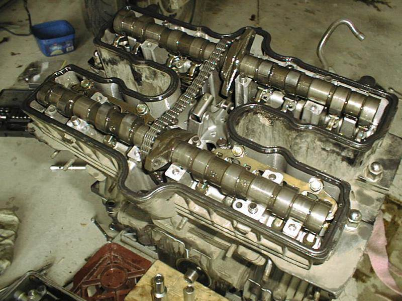
The cam chain is looped around both cam shafts, the tensioner is already installed.
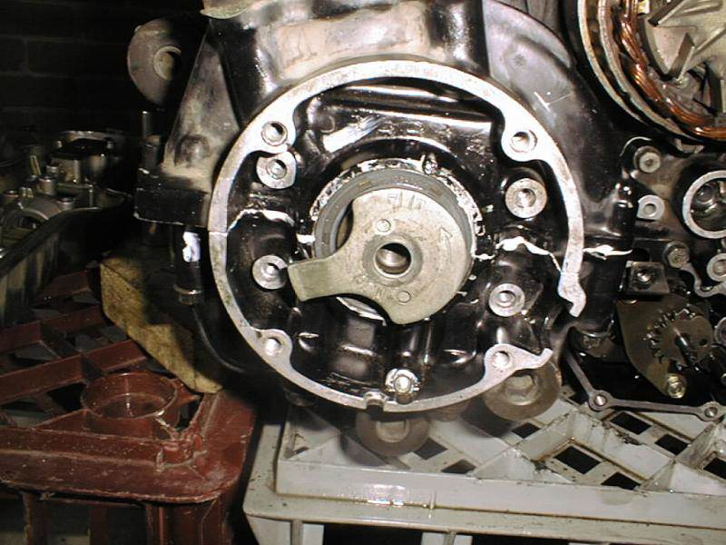
The Generator Pulse Rotor, with the timing ‘T’ mark lined up with the index mark. There are actually two marks on the rotor – be careful.
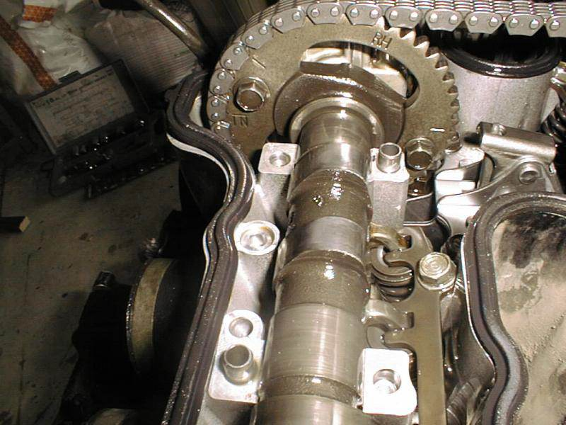
Close up of the intake cam shaft, clearly showing the ‘IN’ timing marks.
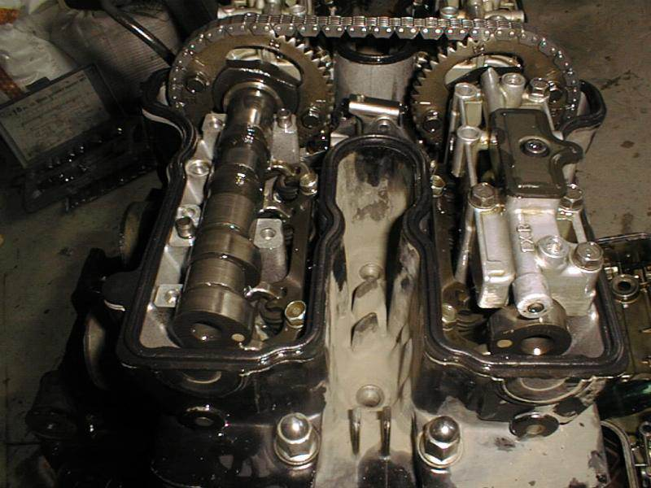
Another picture of the cam shafts, but you can clearly see the ‘IN’ and ‘EX’ marks, and that the lobes of cylinder 4 (nearest the camera) are pointing at each other.
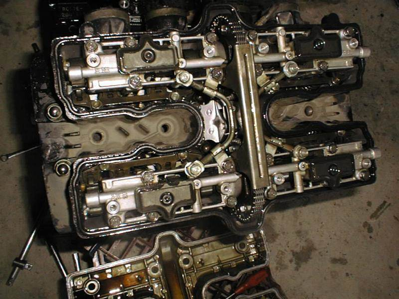
There we go – all we have to do is slap the rocker cover back on, and we’re all finished up here.
Step 6 – Putting it all back together again
It’s a bit of an anti-climax now, it’s just a boring old slog to get all the bits of the bike back together. I won’t bore you with the details, but I’ll make the following points.
- Leave as much out of the engine as possible until after it’s back in the frame – the less weight you have to move around, the better.
- Getting the engine mounting bolts lined up is an interesting exercise. We found it easiest to put the front-most bolt on first, then move the jack up and down to pivot the engine around that bolt. It made lining up the other bolts a lot easier.
- Take your time getting the clutch right – getting the 4 little pins for the oil pump drive gear lined up is a pain. Don’t forget to dip the clutch plates and disks in fresh engine oil before you put them in.
- Don’t forget to install the armoured oil lines under the engine.
- You’ll need to put the chain and drive sprocket back onto the engine before you can tighten up the clutch lock nut.
- If you want to clean the engine, do so whilst it’s out of the frame, it’s a lot easier. Oh, and you might want to clean the frame whilst you’re at it.
- Take your time. You may be almost finished, but there are still a lot of things you can mess up.
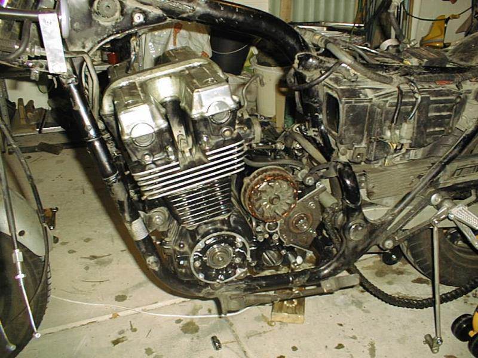
Well, the engine is back in the frame, it just needs all the bits around it to make it complete
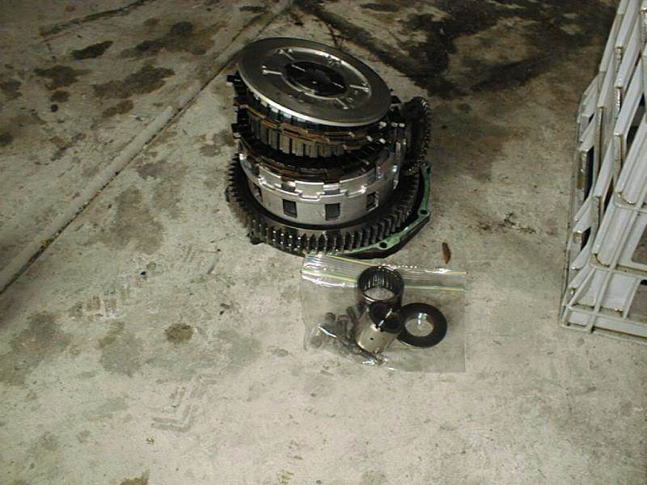
Ever wondered what the insides of your clutch looked like? Here’s one view of all the pieces…
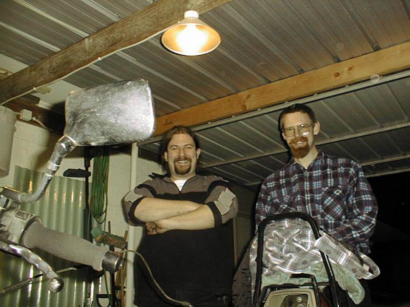
The guilty party – ‘Sharkey’ on the left, Viking on the right. Photograph by Stuart.